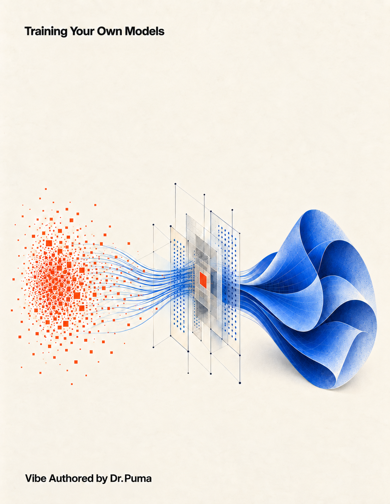

Keep a copy
Read. Inspect. Reproduce.
The same book, in the format that suits your work. The companion files are the authoritative copy for running the examples.
Complete PDF ↓
247 pages, including the front and back covers.
Editable Markdown ↓
The complete manuscript, unchanged. Its five figures are in the companion archive.
Companion archive ↓
57 scripts, source manuscript, figures, configurations, and the companion README.
Before running a recipe
Read the companion README and the verification record. Use separate environments for different project families. GPU recipes are proposed experiments, not measured results from your card.
Verify download integrity
SHA-256 hashes of the exact published files:
training-your-own-models.pdf
fb21161cfddad99f894b5639f1de5eb955d547f7791decd00907c2926a981cb1training-your-own-models.md
fe2692ca2ae38be2eb7d7d3741a46560187502595cf5a10bca99c0a0c9236843training-models-companion.zip
e924589b152f68bb15d89b8f95e3b52005bbe4a9f7770f2d0550b5422d3a11d6